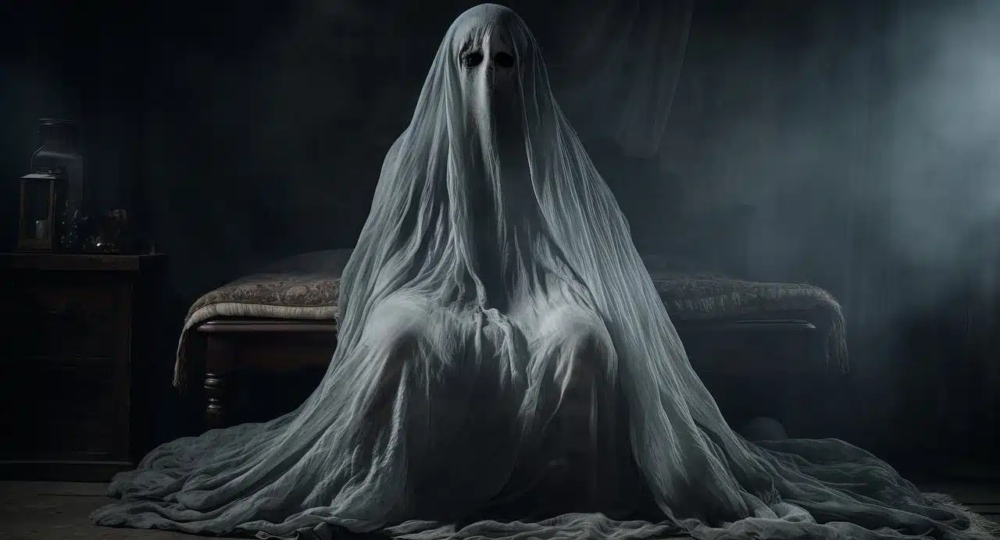

SUCESOS PARANORMALES
Esta página está dedicada para explicar qúe es un suceso paranormal,
ver algunos y puntuar los mas importantes.
Paranormal es un adjetivo que se usa para calificar a aquel suceso que no puede ser explicado por la ciencia.
La disciplina que se encarga de analizar estos fenómenos recibe el nombre de parapsicología.
Los sucesos paranormales no encuentran explicación en las teorías de la biología, la medicina o la física.
Por lo tanto, se consideran como fenómenos fuera de lo normal, ya que su aceptación como real obligaría a modificar y actualizar las teorías de estas ciencias.

Casos paranormales
A continuación se relatan dos de los fenómenos paranormales más destacados del siglo XX.
Es importante aclarar que muchas personas niegan rotundamente la veracidad de los hechos, ya que no existen pruebas irrefutables de su autenticidad, o que al menos no han sido expuestas.
Pincha aquí para ir a Las caras de Belmez